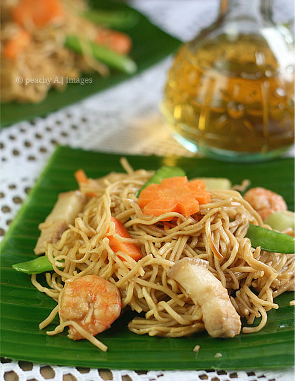

Quezon Province
Pancit Habhab
Pancit Habhab, also known as Pancit Lucban, is a unique noodle dish that originated in Lucban, Quezon, situated in the Eastern/Southern Luzon region. It uses dried flour noodles (miki Lucban) cooked with pork strips, shrimp, and vegetables like chayote and bok choy. What sets this dish apart is how it is traditionally eaten: served on a piece of banana leaf and eaten directly with the mouth without using utensils, a practice called "habhab." Instead of calamansi, a splash of spiced cane vinegar is typically poured over the noodles before eating to balance the savory flavors.

Gather
Ingredients
- Miki Lucban (dried flour noodles)
- Pork strips
- Shrimp
- Chayote, cut into pieces
- Bok choy, chopped
- Onions, finely chopped
- Carrots, julienned
- Garlic, minced
- Soy sauce
- Pork or chicken broth
- Cooking oil
- Spiced cane vinegar (for drizzling)
- Banana leaves (for serving)
Make it
Recipe
- Heat oil in a large wok or pan over medium heat. Sauté the garlic and onions until translucent.
- Add the pork strips and cook until lightly browned. If using liver, add it now and cook briefly.
- Toss in the shrimp and cook until they turn pink, then remove the shrimp and liver and set them aside so they don't overcook.
- Pour the soy sauce and broth into the pan. Bring the mixture to a gentle boil.
- Add the carrots and chayote, cooking them for a few minutes until slightly tender.
- Add the Miki Lucban noodles directly into the boiling broth. Stir gently to let the noodles absorb the liquid.
- Once the noodles have absorbed most of the broth and are cooked through, return the shrimp and liver to the pan.
- Add the chopped bok choy and toss everything together until the greens are slightly wilted.
- Serve warm on individual pieces of clean banana leaves.
- Drizzle with spiced cane vinegar right before eating directly from the leaf.